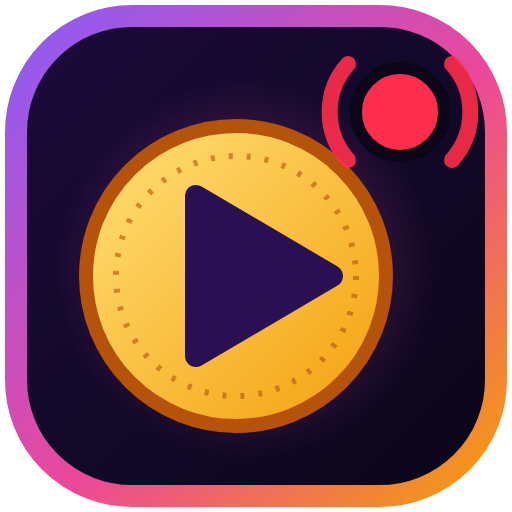

Donaciones de Ceneka, YouTube, Twitch y Kick en un solo panel
Elegí qué columnas querés ver
Usá los botones Columnas de la barra de arriba: Ceneka, YouTube, Twitch o Kick. Podés elegir una o varias.Se abre en una pestaña nueva. Si capturás la pantalla completa en OBS, se va a ver al aire.
Para recibir donaciones primero tenés que conectar tu cuenta. Se hace en:
Pegá ahí el JWT Token de StreamElements de cada canal (YouTube, Kick, Twitch) y elegí su plataforma. Las donaciones de Ceneka entran por el canal que vinculaste en ceneka.net. ¿No sabés dónde está el token? Mirá la guía paso a paso.
Desde —
Las donaciones llegan por StreamElements (recomendado) y/o Streamlabs. Podés usar uno solo o los dos a la vez. ¿Primera vez? Seguí la guía paso a paso.
En StreamElements cada plataforma es un canal aparte con su propio token (JWT). Agregá uno por cada canal: por ejemplo YouTube y Kick. Ceneka manda sus donaciones al canal que vinculaste en ceneka.net.
Para cuando hacen el stream dos personas en lugares distintos. Las dos PCs cargan los mismos canales de arriba y, con este código, lo que uno marca como leído o restaura también se marca en la PC del otro (y en su ventana OBS). Solo viajan códigos internos de cada donación: nunca nombres, montos, mensajes ni tokens.
Si una misma donación llegara por los dos servicios, la app la muestra una sola vez. Para probar solo la app (tarjetas, sonido, voz y OBS) andá a Pruebas.
Elegí desde qué monto se muestra y se lee cada donación. Dejá en 0 para que no haya mínimo. Los montos son en pesos.
Los Super Chats en dólares se comparan usando la cotización de "Pantalla y OBS". Si no la cargaste, se muestran y se leen siempre.
Para que no salga en vivo lo que no querés: palabras que se tapan y usuarios que se ignoran.
bolud* tapa "boludo", "boluda", "boludeces". Se tapan con asteriscos (***) y la voz las saltea. También se aplican al nombre de quien dona.
Que las donaciones grandes y los que más te apoyan se noten.
Un estilo es un "look" con nombre (por ejemplo Dorado brillante o Neón rosa) que le pone efectos a la tarjeta, el mensaje, el nick, el rango y el monto. Después lo elegís para las donaciones grandes o para cada rango.
Cómo te avisa la app cuando llega una donación.
En Chrome, las voces que empiezan con "Google" (ej. "Google español de Estados Unidos") suenan más naturales que las de Windows. "Automática" ya elige la mejor que encuentre.
Cómo se ve el panel principal. Lo de la ventana "Modo OBS" está en la sección OBS.
Lo que ve tu audiencia en la ventana "Modo OBS". Abrila para ver los cambios en vivo.
Una barra de progreso con lo recaudado. Es opcional.
Suman las donaciones de Ceneka y los Super Chats en pesos. Los Super Chats en dólares suman si cargás la cotización en "Pantalla y OBS".
Dónde quedan guardadas tus donaciones. Para verlas, editarlas o exportarlas usá el botón Base de datos de arriba.
Hacé una copia de vez en cuando. Si se borran los datos de navegación de Chrome, el historial se pierde.
Para probar sonidos, voz, links y la ventana de OBS antes del directo. Las donaciones de prueba salen marcadas como "PRUEBA" y no se mezclan con las reales.
¿Te sirve StreamDonations? Podés apoyar su desarrollo con una donación por Ceneka.
Donaciones de Ceneka, YouTube, Twitch y Kick en un solo panel.
¿Encontraste un error o tenés una idea? Escribime al mail de contacto e indicá la versión.
Usa íconos de Font Awesome Free (licencia CC BY 4.0), las tipografías Plus Jakarta Sans y JetBrains Mono (licencia SIL OFL 1.1) y la librería Socket.IO (licencia MIT). Algunos efectos están inspirados en OverlayGO! de TechConChris (licencia MIT). StreamElements, Streamlabs, Ceneka, YouTube, Twitch y Kick son marcas de sus respectivos dueños; esta app no está afiliada a ellos.
Si algo quedó desconfigurado, volvé a empezar. Elegí cuánto querés borrar. Estas acciones se aplican al instante (no hace falta "Guardar cambios").
Restablecer no afecta tu cuenta de Streamlabs ni la de Ceneka: solo lo que guarda esta app en Chrome. Los archivos de la carpeta tampoco se tocan.
Puedes editar directamente la estructura JSON de la base de datos, copiarla o reemplazarla por otra copia de seguridad. Haz clic en "Aplicar Cambios del JSON" al finalizar.